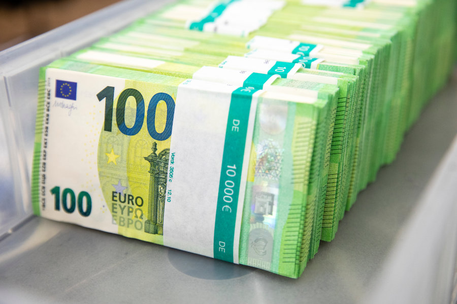

Welcome to wie kann ich 100 euro
Neue Banknoten: Warum die Notenbank den 100-Euro-Schein schrumpft - WELT
2020.12.10 08:18
Abo Abonnement Ticker Suche Anmelden Meine Welt Mehr Zurück Ressorts Produkte Home Apps Autoren Podcasts Themen Wetter Newsletter Kreuzworträtsel Sudoku Live-TV WELT Live N24 Doku Mediathek Dokumentationen Magazine Sendungen A-Z Videos Programm & Livestream Moderatoren TV-Empfang TV-App WELTPLUS Politik Wirtschaft Finanzen Sport Panorama Wissen Gesundheit Kultur Meinung Geschichte Reise ICONIST Politik Deutschland Ausland US-Wahl 2020 Wirtschaft Stellenmarkt Beruf & Karriere Digital Geld Mittelstand Deutscher KI-Preis Better Future Messewirtschaft Anzeigen Service Value Thought Leaders Innovation Deutschland 100prozentig Thüringen Zukunft Mittelstand Nachhaltig anlegen Sport Fußball Bundesliga DFB-Pokal Live-Ticker Ergebnisse & Tabellen Formel 1 Darts Golf Fitness Panorama kmpkt Kaufberatung Anzeigen Accentro Wissen Gesundheit Natur & Umwelt Weltraum Psychologie IQ-Test Anzeigen Einzigartiger Planet Kultur Stützen der Gesellschaft Deus Ex Machina Literarische Welt Film Pop Kunst Theater Architektur Klassik Medien BLAU Meinung Kommentare Kolumnen Satire ICONIST Mode Gesellschaft Design Service Beauty Männer Fitness Zu Tisch Unterwegs Schmuck Uhren Iconista Geschichte Erster Weltkrieg Zweiter Weltkrieg Kalter Krieg Mittelalter Archäologie Reise Europa Fernreise Deutschland Städtereise Reisewetter Anzeigen WELT am Sonntag Leserreisen Food Essen Trinken Entdecken Regional Hamburg & Schleswig-Holstein Berlin & Brandenburg Nordrhein-Westfalen Bayern Baden-Württemberg Niedersachsen & Bremen Hessen Rheinland-Pfalz & Saarland Sachsen Sachsen-Anhalt Thüringen Mecklenburg-Vorpommern Sonderthemen WELT-Transformationsgipfel Genussland Spanien Weinland Frankreich Immobilienwirtschaft Weinland Österreich Beethoven 450 Jahre Staatskapelle Anzeigen Sonderveröffentlichungen Kontakt Impressum Mediadaten Schlagzeilen Produkte Unsere Produkte Digital TV Audio Zeitung WELT ePaper WELT NEWS-APP WELT Edition-App Newsletter Gutscheine (Anzeige) Alle WELT-Gutscheine Asos-Gutscheine Baby-Walz-Gutscheine Deichmann-Gutscheine Douglas-Gutscheine Eis.de-Gutscheine Ebay-Gutscheine Dyson-Gutscheine Ikea-Gutscheine Saturn-Gutscheine Otto-Gutscheine Kooperationen Wein Vergleich Kunst & Design Fonds Anmelden Meine Welt Guten Tag Login Login Registrieren Registrieren Sie sich kostenlos und erhalten Sie auf Ihre Interessen abgestimmte Inhalte sowie unsere vielseitigen Newsletter. Registrieren Registrieren Sie sich kostenlos und erhalten Sie auf Ihre Interessen abgestimmte Inhalte sowie unsere vielseitigen Newsletter. Übersicht Community-Profil Einstellungen Meine Daten Newsletter Abmelden Abmelden Home Geld
Neue Banknoten: Warum die Notenbank den 100-Euro-Schein schrumpft
Geld Geldanlage Immobilien Verbraucher Podcast Börse Geld Neue BanknotenWarum die Notenbank den 100-Euro-Schein schrumpft
Veröffentlicht am 17.09.2018 | Lesedauer: 6 Minuten Von Frank Stocker Finanz-Redakteur ONL 100 Euro ScheinNeue Hunderter und Zweihunderter vervollständigen die zweite Euro-Banknoten-Generation. Verbraucher müssen sich allerdings noch etwas gedulden, bevor sie die Scheine in Händen halten können.
Quelle: WELT/Lukas Axiopoulos
Autoplay Am 28. Mai 2019 kommen neue Banknoten zu 100 und 200 Euro in Umlauf. Diese enthalten zwei völlig neue Sicherheitsmerkmale, um sie fälschungssicherer zu machen. Auch an die Alltagstauglichkeit haben die Entwickler gedacht. 0 Kommentare AnzeigeD ie meisten werden sie eher selten in der Hand halten. Den 100-Euro-Schein spuckt zwar ab und zu noch der eine oder andere Geldautomat aus. Der 200er taucht dagegen nur selten im Alltag auf. Und wenn, dann kommt sofort der Verdacht auf: Schwarzgeld . Doch wer auch immer diese Scheine nutzt, er muss künftig etwas genauer hinsehen. Denn am 28. Mai 2019 werden diese in neuem Design in Umlauf gebracht, die alten Exemplare aus dem Verkehr gezogen.
Die beiden Scheine sind damit die letzten, die ausgetauscht werden, nachdem seit 2013 nach und nach die anderen Scheine ersetzt wurden, zuletzt seit April 2017 der 50er. Die neuen 100er und 200er fallen dabei jedoch ein wenig aus dem Rahmen. Denn zum einen erhalten sie zwei völlig neue, zusätzliche Sicherheitsmerkmale, die bisher noch auf keiner Euro-Note enthalten sind. Zum anderen werden sie ein wenig kleiner als ihre Vorläufer. Für den 500-Euro-Schein indes wird nun das Totenglöcklein geläutet.
Unter den 21,7 Milliarden Euro-Scheinen, die derzeit im Umlauf sind, befinden sich zwar nur 2,7 Milliarden 100er und sogar nur 251 Millionen 200er. Deren Wert entspricht jedoch rund 300 Milliarden Euro, und das ist ein Viertel des Wertes aller in Umlauf befindlichen Euro-Banknoten. Zudem wächst bei keiner Banknote die Anzahl so schnell wie beim 100er, pro Jahr steigt sie um 7,3 Prozent.
Lesen Sie auch „Münzverschlechterung“ Die Euro-Krise ist eigentlich schon 500 Jahre alt AnzeigeDie Fälschungssicherheit wird für diese Banknoten also immer wichtiger. Diese soll durch die Herausgabe der neuen Schein-Serie deutlich erhöht werden. Denn sie enthält eine Reihe neuer und verbesserter Sicherheitsmerkmale. Damit wird Fälschern das Handwerk zwar wohl nicht gelegt werden können – das wird letztlich nie ganz möglich sein. Es soll ihnen aber deutlich erschwert werden.
Sicherheitsmerkmal Silberstreifen
Wie schon die bereits im Umlauf befindlichen neuen Banknoten verfügen auch die neuen Scheine zu 100 und 200 Euro auf der Vorderseite über die markante Wertzahl in Smaragdgrün. Sie gilt als das auffälligste und wichtigste Sicherheitsmerkmal. Kippt man die Banknote, verändert sich die Farbe, und ein Lichtbalken wandert auf und ab. Zusätzlich jedoch erscheinen bei diesen beiden Banknoten innerhalb der Smaragdzahl nun noch diverse Euro-Symbole.
Lesen Sie auch Sonderprägung Für diese 5-Euro-Münze stehen Sammler SchlangeDiese werden auch noch bei einem zweiten Sicherheitsmerkmal auftauchen: dem aufgedruckten Silberstreifen. Dort ist die Wertzahl des jeweiligen Scheines zu sehen, und um diese kreisen künftig – satellitengleich – diverse Euro-Symbole, sobald man den Schein kippt. Auch dies gab es bisher noch nirgends.
AnzeigeDaneben enthält dieser Folienstreifen aber auch ein Porträtfenster, wie schon beim 20er und 50er. Sobald der Schein gegen das Licht gehalten wird, wird ein Bereich in dem Silberstreifen durchsichtig, darin ist als Hologramm das Porträt der mythischen Gestalt der Europa zu sehen – derentwegen die Schein-Serie übrigens auch den Namen „Europa-Serie“ trägt.
Für die schnelle Überprüfung auf Echtheit sind zudem die Riffelungen am linken und rechten Rand der Vorderseite wichtig sowie das Relief, das beim Hauptmotiv, bei der Schrift und der großen Wertzahl ertastet werden kann. Diese Sicherheitsmerkmale enthalten alle neuen Euro-Banknoten, sie sind nur unterschiedlich ausgestaltet, sodass Sehbehinderte darüber den Wert des Scheines ertasten können.
Der neue 200er Quelle: REUTERSWeniger intensive Farben
Darüber hinaus gibt es noch einige Sicherheitsmerkmale, die mit bloßem Auge nicht zu erkennen sind, die aber für die maschinelle Verarbeitung wichtig sind, also beispielsweise an Automaten. So entstehen unter UV-Licht oder Infrarotlicht charakteristische Veränderungen. Und schließlich gibt es noch einige geheime Sicherheitsmerkmale, die nur die Notenbanken selbst kennen, sodass sie bei extrem guten Fälschungen diese letzten Endes doch zweifelsfrei entdecken können.
Großfamilie in Verdacht, Falschgeld in Umlauf gebracht zu haben
Einsatzkräfte der Hauptstadt haben die Wohnung eines 18-Jährigen in Berlin Kreuzberg durchsucht. Der Mann soll Mitglied einer arabischen Großfamilie sein. Laut Polizei waren rund 40 Beamte im Einsatz.
Quelle: Reuters
AnzeigeDie Veränderungen beim Design ähneln den Neuerungen bei den anderen Scheinen der neuen Serie. Die Farben sind etwas weniger intensiv, die Darstellungen – Brücken und Fenster – erscheinen nun dreidimensional. Dabei handelt es sich nach wie vor um rein fiktive Darstellungen, die jeweils stellvertretend für eine europäische Architekturepoche stehen. Beim 100-Euro-Schein sind das die Epochen des Barock und Rokoko, den 200er beherrscht die Glas- und Eisenarchitektur des ausgehenden 19. und beginnenden 20. Jahrhunderts.
Allerdings ändert sich die Größe der 100- und 200-Euro-Scheine. Deren Höhe entspricht nun der des 50-Euro-Scheins. Damit soll gewährleistet werden, dass sie besser in Geldbeutel passen, wo diese Banknoten bisher meist ein wenig herausragten. Die Breite der Scheine zu 100 und 200 Euro bleibt dagegen wie bisher.
Lesen Sie auch Podcast - Folge 14 Bargeldwahnsinn und das größte Experiment der WirtschaftsgeschichteWer ganz genau hinsieht, wird zudem auf der abgebildeten Europa-Karte winzige Veränderungen feststellen. Dort sind auf allen Scheinen der neuen Serie auch die Inseln Malta und Zypern zu sehen, die auf den Scheinen der ersten Euro-Serie nicht enthalten waren – die beiden Länder waren bei Einführung des Euro noch nicht Mitglied der EU.
Zehn statt wie bisher fünf Kürzel für die EZB
Die seitherige Erweiterung der EU hat noch einige andere Konsequenzen für die Gestaltung der Europa-Serie. So enthalten diese Scheine die Währungsbezeichnung „Euro“ in kyrillischen Buchstaben, neben den lateinischen und griechischen Lettern. Denn Bulgarien, das seit 2007 Mitglied der EU ist, nutzt dieses Schriftsystem, und entscheidend für die Gestaltung des Euro ist nicht, wer den Euro bereits eingeführt hat, sondern wer Mitglied der EU ist.
Auch die Anzahl der Abkürzungen für „ Europäische Zentralbank “ am linken Rand auf der Vorderseite ist aus dem gleichen Grund deutlich größer geworden. Waren es auf den alten Scheinen nur fünf Kürzel, so sind es nun zehn, wie auf dem neuen 50er. Auf den neuen Scheinen zu fünf, zehn und 20 Euro sind es dagegen nur neun. Denn zwischenzeitlich ist mit Kroatien ein weiteres Land Mitglied der EU geworden, sodass nun auf den Scheinen ab 50 Euro auch die kroatische Abkürzung ESB enthalten ist.
Lesen Sie auch Michael Miebach Dieser Bayer will das Bargeld abschaffenMit den alten 100- und 200-Euro-Scheinen verschwinden die letzten, bei denen noch eindeutig festgestellt werden konnte, in welchem Land sie gedruckt wurden. Denn auf der alten Serie gab der erste Buchstabe der Seriennummer einen Hinweis darauf, X steht hier beispielsweise für Deutschland beziehungsweise die Deutsche Bundesbank .
Bei den Scheinen der neuen Serie jedoch beginnt die Nummer mit zwei Buchstaben, die nicht mehr auf ein Land verweisen, sondern auf die Druckerei, in der sie hergestellt wurden. Diese jedoch muss nicht mehr in dem Land liegen, das den Druck in Auftrag gegeben hat, denn die Bundesbank beispielsweise schreibt ihre Aufträge hierfür europaweit aus.
Alte Scheine bleiben gültig
AnzeigeAllerdings kann es durchaus sein, dass noch lange Zeit alte 100er und 200er auftauchen. Denn diese behalten ihre Gültigkeit. Und da die Scheine vor allem zur Hortung verwendet werden – in der Euro-Zone, oft aber auch außerhalb – dürfte der Austausch gegen die neuen Banknoten nur langsam erfolgen.
Lesen Sie auch Leben in Venezuela 33.000 Prozent Inflation – und „die Menschen sterben wie die Fliegen“Deshalb dürften auch die 500-Euro-Scheine noch eine Weile im Verkehr bleiben, obwohl ab Ende dieses Jahres keine neuen Exemplare mehr gedruckt werden. Jene Banknoten, die über den Geldkreislauf bei den Notenbanken landen, werden zudem eingezogen und vernichtet.
Diesen Beschluss hatte die Europäische Zentralbank im Mai 2016 gefasst. Der Grund: Die Scheine dienen angeblich vor allem der Terrorfinanzierung und der Geldwäsche, oder eben zum Transport von Schwarzgeld. Dafür wird dann vielleicht künftig noch häufiger der 200er eingesetzt.
Die Deutschen lieben ihr Bargeld
Eine Emnid-Umfrage im Auftrag der Postbank ergab, dass die Deutschen im Urlaub am liebsten bar zahlen. Jeder zweite Bundesbürger hält Bargeld für das wichtigste Zahlungsmittel auf Reisen.
Quelle: WELT/Lukas Axiopoulos
Hamburg Trickbetrug in großem Stil Ermittler fassen Bande falscher Polizisten
Michael Miebach Dieser Bayer will das Bargeld abschaffen
Karsten SeibelWirtschaft 300 Millionen Euro Iran macht Rückzieher bei umstrittenem Bargeld-Transfer aus Deutschland
Deffner und Zschäpitz Podcast - Folge 14 Bargeldwahnsinn und das größte Experiment der Wirtschaftsgeschichte
Andreas ThiemannGeld Kaufprogramme der EZB Inflation und Euro-Stärke – für die neuen Probleme liegt die Bazooka bereit
Anja EttelEx-Chefvolkswirt der EZB „Wir haben politisch und ökonomisch unqualifizierte Mitgliedstaaten aufgenommen“
Michael HöflingMeinung Trotz Corona Darum wird die Liebe der Deutschen zum Bargeld niemals enden
Johannes BeermannDollar-Verfall Der mächtige Euro wird zum Symbol für Europas Rückkehr an die Weltspitze
Frank StockerThemen
Banknoten und Münzen Falschgeld Euro-Krise KOMMENTARE WERDEN GELADEN Impressum Datenschutz AGB Kontakt Privatsphäre Karriere Feedback Jugendschutz WELTplus Newsletter FAQ WELT-photo Syndication WIR IM NETZ Facebook Twitter Instagram UNSERE APPS WELT News WELT EditionDie WELT als ePaper: Die vollständige Ausgabe steht Ihnen bereits am Vorabend zur Verfügung – so sind Sie immer hochaktuell informiert. Weitere Informationen: http://epaper.welt.de
Der Kurz-Link dieses Artikels lautet: https://www.welt.de/181561268
